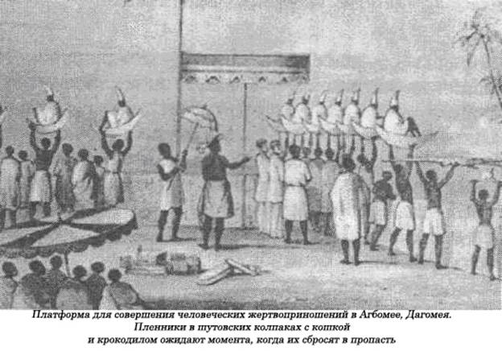

Континент, залитый кровью.
В январе 1948 года, в субботу вечером, Мочесела Кото сидел в хижине, потягивая пиво с Дейном Ракачаной и еще несколькими гостями, приехавшими в деревню Молой в Базутоленде на свадьбу (ныне независимое государство Лесото на территории Южной Африки). Во время вечеринки в его дом пришла жена вождя со своими преданными людьми и шепнула кое-кому из гостей: «Убейте Мочеселу для меня. Мне нужно приготовить из него колдовское снадобье, которое я повешу в амулете на шею своему сыну, чтобы он мог получить желаемое место. Те, кто вздумает мне не подчиниться, будет убит».
Один из ее верных слуг отвел в сторонку Дейна. Он объяснил ему, что происходит, сообщив, что все готово к исполнению злодейского плана. Дейн, подойдя к Мочеселе, тихо сказал ему: «Кузен, давай-ка выйдем на минуту».Тот, ни о чем не догадываясь, вышел с ним из хижины, где шестнадцать человек уже ожидали его вместе с женой вождя и двумя ее служанками. Кивком головы она поприветствовала Дейна, напомнив ему о ее приказе. Она тут же велела своим людям схватить несчастного. Когда его схватили за руку, он закричал: «Отец мой, Фоло, неужели ты собираешься убить меня?».Но Фоло молчал. Тогда он сказал, снова обраща ясь к нему: «Освободи меня, и я подарю тебе моего черного быка!». «Я не твой отец, и мне не нужен твой бык, мне нужен ты, только ты»,— ответил Фоло. Мочесела вдруг громко завопил, но убийцы быстро заткнули ему рот и потащили его подальше от деревни. Дейн отгонял любопытных мальчишек, которые прибежали на душераздирающие вопли жертвы. Отыскав местечко поукромнее, они быстро раздели его догола, уложили на землю. Тут же появилась масляная лампа, при свете которой палачи, ловко орудуя ножами, отрезали от тела жертвы несколько кусочков мяса. Фоло облюбовал икру ноги, второй — бицепс на правой руке, третий — вырезал кусок из правой груди, а четвертый — из паха. Все эти кусочки они разложили на белой тряпке перед Мосалой, местным знахарем, которому предстояло приготовить необходимое снадобье. Один из них собирал в котелок струящуюся из ран кровь. Дейн, вытащив нож, содрал всю плоть с его лица до костей — от лба до горла, вырезал язык и выколол глаза. Но жертва их умерла только после того, как ее полоснули острым ножом по горлу. Жена вождя, которая хладнокровно наблюдала за экзекуцией, поблагодарила за услугу всех, отдала распоряжение побыстрее избавиться от трупа...
Таково краткое содержание свидетельств, зачитанных от имени Британской короны в Верховном суде, где разбиралось уголовное дело в связи с ритуальным убийством — «Король против Мамакхабаны и его пятнадцати сообщников».Нужно отметить, что подобные ритуальные убийства в стране приняли угрожающий размах. Единственной целью варварского обряда было получение особого снадобья под названием «диретло», а для этого требовалось разрезать в определенном порядке плоть живого человека, причем жертва должна быть обязательно соплеменником, выбранным для этого знахарем племени, который разглядел в этом человеке нужные магические способности, необходимые для приготовления сильнодействующей микстуры. Иногда он даже мог выбрать родственника одного из участников обряда. Никаких подробностей относительно выбора намеченной жертвы никогда никому не сообщалось. Те, кого об этом спрашивали на суде, утверждали, что ничего об этом не знают.
Для приготовления «диретло» требовалось не только срезать плоть у живого человека, но потом еще его и умертвить, а труп вначале спрятать в тайном месте, после чего оставить на земле, где-нибудь подальше от деревни. Способ такого ритуального убийства тоже был тщательно разработан, В судах, где перед правосудием представали виновники такой чудовищной практики, так и не удалось выяснить, что же из себя представляет это снадобье, каково его применение. Точнее говоря, это было не снадобье и не медицинское средство, а скорее заклинание, призванное либо излечить болезнь или. напротив, вызвать ее у другого. Как выяснилось в ходе разбирательства этого судебного дела, жена вождя не очень хотела заполучить желанное место вождя для своего сына — скорее, напротив, она намеревалась сделать все, чтобы не допустить этого, так как в таком случае лишалась бы своей власти регентши при нем. Но она скрыла свой первоначальный умысел. В другом случае суд рассматривал другое, связанное с ритуальным убийством, уголовное дело — с целью получения противоядия от такого заклинания.
«Диретло» прежде назывался «дитло», и в XIX веке его приготовляли главным образом из плоти чужеземцев, прежде всего пленников. Представители власти считали, что изготовление такого средства было не столько древним обычаем, сколько средством междоусобной племенной розни в этом регионе в этом столетии, что стало истинной «чумой» для местных жителей, так как постоянно требовалось все больше и больше оберегающих от сглаза микстур, приготовленных из вражеских пленников. «Диретло» пришло на смену «дитло», когда такие войны прекратились и приток пленников оскудел. В 1949 году появился специальный доклад, в котором повышенный спрос на этот медикамент объяснялся «усилением стресса и беспокойства, причиняемых современным образом жизни», хотя племенная жизнь в Базутоленде ни по каким стандартам отнюдь не напоминала современную. «Дитло» и его производное «диретло» приготовлялось одинаковым способом. Куски человеческого мяса сжигались на огне с целебными травами и другими ингредиентами, покуда в результате не получалась обугленная масса, которая сбивалась и смешивалась с животным или человеческим жиром, после чего образовывалось что-то вроде черной мази. Это вещество помещали в полый маленький рог от козла, называемого «ленака» — иногда точно так же называлось и это снадобье. Когда-то «ленака» пользовались только могущественные вожди. Один из них, рог Моисея, стал общенациональным фетишем племен базуто — он использовался для укрепления тела и духа воинов перед битвой, для защиты родной деревни вождя, для противодействия заклинаниям врагов-магов.
Подобные суды в Базутоленде стали знаменательным событием, ибо в отличие от прежних донесений они дают подробную картину того, что, по сути дела, представляют из себя африканские убийства, и снабжают нас деталями о тех изменениях, которые они претерпевают. Окончание межплеменной вражды не уничтожило спроса на магическое заклинание, приготовленное из человеческой плоти, — просто сократило масштаб его применения. Теперь оно уже не способно обеспечить победу в кровожадной войне, но зато превратилось в способ для усиления интриг и закулисных маневров. Вместо вражеских цленников жертвами теперь становились члены того же племени — довольно редкая форма человеческих жертвоприношений, для которых прежде требовались только чужаки, рабы, пленники, но ни в коем случае не соплеменники. Автор этого официального доклада, по-видимому, счел за благо всячески преуменьшать масштаб таких ритуальных убийств, считая, что они не «ритуальны» до конца, а посему, мол, разумеется, не являются настоящими человеческими жертвоприношениями. Однако выбор жертвы, способ убийства и избавления от трупа убеждают нас в том, что тщательно разработанный ритуал сопровождает каждый этап приготовления снадобья. Никто и не собирался применять его физические свойства для лечения больных; оно прежде всего было предназначено для получения выгод и привилегий, таких, как место вождя племени, а они, несомненно, полностью зависели от магической силы богов племени и тех, кто был принесен им в жертву. Можно привести в этом отношении немало примеров. Вера в эффективное воздействие человеческой плоти и крови в Южной Африке свойственна не только для такого государства, как Базутоленд (Лесото). В 1930-х годах подобные убийства совершались и в Свазиленде, где превращенное в заклятие человеческое мясо не только давало желанные привилегии представителям высшей знати, но еще и воздействовало на богов, побуждая их не скупиться на тучный урожай.
Во времена свирепой межплеменной вражды производство стимулирующих отвагу заклятий из человеческой плоти получило широкое распространение. «Диретло», или «дитло» в первоначальной форме, стало одной из тщательно разработанных версий более откровенной практики съедения сердца врага, чтобы тем самым перенять у него смелость, мужество и героизм, как это, например, до сих пор имеет место среди племен ашанти, живущих на территории современной Ганы. Это был чисто прагматический подход, и это стимулирующее средство обычно предлагалось таким «храбрецам», которые пока не убили ни одного врага. Дайяки на Борнео, по официальным сведениям, еще в начале нашего века поедали сердца своих соплеменников, чтобы стать более бесстрашными и мужественными. В некоторых районах Африки сердца врагов растирали в порошок, из которого готовили микстуру, и подобный метод приготовления медицинских препаратов существовал не только в Африке. Так, индейцы, жившие на берегах реки Ориноко в Венесуэле, для этой цели высушивали трупы на гамаке. Из стекавшей по капле жидкости они приготовляли чудодейственный магический напиток, которым снабжали своих знахарей. По-видимому, самый драматический по характеру эпизод, хотя окончательно и не подтвержденный, связан с именем царя в Бирме, который посвятил свою жизнь восьмикратному пути сострадания Будды. Он взошел на трон в 1634 году, но никак не мог обрести душевного покоя из-за мрачного прорицательства, что он умрет вскоре после своей коронации. Тогда он решил немного потянуть с торжественной церемонией, но все же наступило время, когда откладывать ее уже больше было нельзя. Другой ясновидящий сказал ему, что его можно спасти и даже сделать, если он того захочет, невидимкой, но для этого ему нужно выпить чудодейственный эликсир, приготовленный из двух тысяч сердец белых голубей и шести тысяч человеческих сердец. У этой истории весьма печальный конец — магическое снадобье не сработало: король все равно умер после коронации, оставив наследнику царство с сильно поредевшим населением.
Несмотря на всю свою сложность, подобные ритуальные убийства представляют собой прежде всего религиозный акт, хотя объясняющие его поверья нам зачастую просто недоступны для понимания. В своем классическом труде, посвященном изучению африканской религии, И. Г. Пэрринджер совершенно справедливо замечает, что многие относятся с презрением к ней, так как на континенте нет величественных каменных храмов, свидетельствующих о ее прежнем высоком статусе.
Однако, по его мнению, их отсутствие еще ничего не говорит о недостатке уважения к богам со стороны африканцев. В Африке вообще мало пригодного для строительства «мягкого камня», а мечети и церкви там строились и строятся по сей день в основном из глины. Африканские храмы возводились из этого недолговечного строительного материала и обычно были маленькими, грубо сработанными, — это объяснялось еще частично и тем, что религиозные службы проходят там на открытом воздухе. Большинство африканцев в той или иной мере поклонялись высшему существу, внутреннюю природу которого весьма трудно понять, так как они редко его изображали. На многих ярко раскрашенных деревянных образах в храмах как в Западной, так и Центральной Африки этот главный дух вообще не представлен, а вместо него изображены его ближайшие помощники в виде человеческих фигур. Пэрринджер подчеркивает важность поклонения африканцев своим предкам, и этот культ, по его мнению, является основным для всех африканских регионов. Так, многочисленные жертвоприношения в Дагомее приводили в шоковое состояние путешественников по Западной Африке. Но они, по сути дела, были благочестивой, пусть немного и утрированной, заботой о благополучии души умершего вождя, который из года в год нуждался в притоке новых слуг.
Человеческие жертвоприношения в Африке принимали самую разнообразную форму, но весьма немногие из них были свойственны только этому континенту. Те же душевные порывы объясняли те или иные жертвоприношения. Большое внимание уделялось плодородию почвы и ритуалам, связанным с созреванием и сбором урожая, особенно таким, как вызывание дождя или прекращение продолжительного ливня. Часто мольбы о ниспослании дождя или его прекращении обращали к предкам. Так, туземцы племени багангвато в Южной Африке во времена засухи обращались со своими просьбами в песнопениях о дожде не к богам, а к своим умершим вождям.
Если практика человеческих жертвоприношений и была широко распространена в Африке, ежегодное число жертв там не было особенно большим, а каннибализм как таковой ограничивался только некоторыми регионами, такими прежде всего, как бассейн реки Конго и Нигера. Массовые ритуальные убийства в Африке были, скорее, исключением, чем общепринятым правилом. Например, в Уганде вождь посылал на верную смерть в непроходимые джунгли одного-двух «козлов отпущения», если только боги сообщали ему о кознях, которые чинят против него с помощью магии его враги. В таком случае выбор мог пасть на взрослого мужчину или на мальчика либо на женщину с ребенком. В сопровождении коровы, козла, курицы, утки или собаки их отправляли на явную медленную мучительную смерть на территорию противника. Предварительно им ломали кости, чтобы у них не хватило сил для возвращения домой. Такой принцип «козла отпущения» превалировал в Нигерии, где в некоторых районах приносили в жертву молодую женщину, которая тем самым искупала прегрешения своего племени. Жертвы для подобных церемоний приводились из соседних племен, и любой член общины, который совершил великий грех в течение года — будь то колдовство, воровство или прелюбодеяние, — должен был за это заплатить определенный штраф. В 1858 году преподобный Д. К. Тейлор стал свидетелем одной из таких церемоний. В Онитсе, на берегу Нигера, жертву волокли лицом вниз по земле от дома вождя до реки, а толпа улюлюкала безжалостно ей вслед: «Зло! Зло!». Тело тащили по земле, что, по их мнению, способствовало скорейшему прощению всех грехов общины. В Африке кроме жертвоприношений ради поклонения предкам существовали и такие, в которых главная роль принадлежала самому вождю. Не только простые люди приносились в жертву в качестве слуг для монархов, но во многих регионах и сам правитель мог запросто стать очередной жертвой. У шиллуков на юге Судана жизнь вождя находилась в постоянной опасности.

Его не только убивали при проявлении первых признаков старческой немощи, но даже тогда, когда он находился в расцвете сил; ему мог бросить вызов любой соперник, и приходилось вступать с ним в смертельный поединок. Обычай убийства вождя существовал и в Западной Африке. У племен тукунов ему разрешалось править лишь семь лет. Если за этот период правления он серьезно заболевал или просто начинал кашлять или чихать, если вдруг падал с лошади, то его могли немедленно предать смерти. Право задушить вождя принадлежало его главному советнику.
Такое же представление превалировало и на другом краю «черного» континента. Известный немецкий антрополог Лео Фробениус описывает, как Макони, правитель той страны, которая в настоящее время называется Зимбабве, был осужден на смертную казнь всего четыре года спустя после восшествия на трон. Приговор выпало привести в исполнение его первой жене, которая задушила его с помощью специальной веревки, сделанной из жил вола в ночь полнолуния. Его труп отнесли на близлежащую гору. Там его ежедневно посещали жрецы, которые проводили разработанные самым тщательным образом религиозные церемонии. Его мозг, печень, все внутренности по очереди извлекались из тела и складывались в кожаный мешок, а освободившееся пространство набивали травами и листьями. После этого труп несколько раз обвертывали куском ткани, как мумию, и оставляли в сидячем положении, причем из этого узла должны были выступать только кончики пальцев с ногтями. Затем этот узел с мумией заворачивали еще и в шкуру быка, выращенного специально для такой цели. Через год жрецы вытаскивали останки короля из-под шкуры и складывали их в мешок. Особое внимание обращалось на то, чтобы при» этом не пропал ни один ноготь. На рассвете после первой ночи полнолуния любимую жену короля (не ту, которая задушила) раздевали донага, снимали с нее все украшения, после чего душили. После принесения в жертву еще нескольких представителей знати мумию замуровывали в пещере, в которой оставляли лишь небольшое отверстие. Специально выделенный для этой цели жрец постоянно дежурил у пещеры, ожидая, когда оттуда выползут змея, червь, черепаха и жук, в которых вселилась душа монарха. Когда одна из этих тварей на самом деле вылезала через дырку, ее заделывали. В 1929 году Фробениус писал, что такие ритуалы давным-давно не существуют. Но тем не менее в 1928 году дочь местного африканского царька была принесена в жертву, чтобы вызвать дождь. Вероятно, засуха длилась довольно долго, так как девушка ждала рокового дня целых два года, покуда не достигла половой зрелости, после чего ее задушили, как того требовал обычай.
В зимбабвийских ритуальных убийствах вождей суть африканских человеческих жертвоприношений, при которых требовалась смерть одного человека, а не массовое уничтожение людей. Поразительное сходство существует между такими ритуалами в Африке и в других странах и континентах — и там и там душат вдов, отправляют на верную смерть «козлов отпущения», сжигают людей живьем в домах, приносят жертвы речным богам и грядущему урожаю, в загробный мир направляются гонцы, чтобы сообщить предкам и богам последние известия. Кроме просьб о победе в войне большое внимание уделяется мольбам о ниспослании дождя и богатого урожая, что даже может закончиться убийством самого вождя, а это становится олицетворением гибели бога, живым воплощением которого он является. Свидетельства о сохранении практики принесения в жертву множества людей, даже царской крови, в этой далекой части Африки в XIX веке говорит о том, что мы недалеко ушли от истоков возникновения человеческих жертвоприношений. Египтологи не раз указывали на параллели, существующие между ритуальной гибелью царей в различных частях Африки со смертью Озириса, бога и правителя, жившего пять тысяч лет тому назад. Он тоже убит, а тело расчленено.
Понятие о царском ритуальном убийстве могло распространиться на всю Африку через Эфиопию, где подобная практика существовала до III века н.э., когда правителей этой страны ожидал такой печальный конец. Другие ритуалы, когда царя не убивали, а только заставляли снять все «табу», чтобы подвергнуть его унизительным издевательствам, происходят, по сути дела, от таких существовавших прежде ритуалов, когда монарха в результате убивали. В некоторых случаях правителю предстояло умереть за свой народ, так как он «брал на себя грехи», совершенные его подданными. В некоторых странах, таких, как Уганда, или в дельте реки Нигер вместо вождя в жертву приносили «козла отпущения», чтобы очиститься таким образом от греха.
Однако в одном регионе Западной Африки ситуация была совершенно иной. Принципы оставались теми же — вождь по-прежнему играл главную роль при соблюдении предписаний и культ предков имел столь же важное значение, как прежде, но вместо одного «козла отпущения» здесь приносили тысячи жертв, чтобы обеспечить благополучие правителя как в этом, так и в потустороннем мире. В этот район входили царство Дагомея, где сейчас расположена республика Бенин, и царство Эдо, протянувшееся на несколько сотен миль к востоку. Массовые человеческие жертвы в этих местах европейские путешественники наблюдали на протяжении нескольких веков, и они приводили в шоковое состояние не только их самих, но и пораженных читателей. По своим животрепещущим деталям, по продолжительности исторического периода эти леденящие душу рассказы являются уникальными в истории человеческих жертвоприношений.
Все начинается с города Бенина, не столицы Бенина, а царства Эдо. Португальские моряки впервые открыли эту часть африканского побережья в 1469 и 1475 годах, но почти не оставили сообщений о том, что они там видели. Однако уже тогда предпринимались попытки обратить туземцев в христианство, так как три миссионера, направленные в эти места португальским королем Жоаном III в 1538 году, обнаружили там уже следы новой религии. Местный правитель, король Оба, сам принял христианство еще в 1516 году, но его приобщение к богу белых людей оставило в неприкосновенности его прежнюю мораль, образование, религиозные взгляды.
Португальцы, которые прибыли сюда в 1470-х годах, имели смутное представление о человеческих жертвоприношениях в этой местности. Миссия, направленная португальским королем, привела конкретные примеры массовых человеческих жертвоприношений, которые организовывались от имени этого африканского «христианского» правителя. Ален Райдер в своей книге о Бенине утверждает, что обращение Обы в христианство даже привело к резкому увеличению числа таких жертв, что соответствовало его крепнувшему статусу христианского монарха. Что касается других ритуальных убийств в Африке, то я никак не могу согласиться с теми европейцами, которые считают их лишь недавним извращением обычно доброго и благородного дикаря. Эти ритуалы существовали с незапамятных времен. Хотя европейское присутствие не оказало сколь-нибудь заметного влияния на местную духовную жизнь, Оба решил добиться материальных выгод в европейском масштабе, для чего отправился на завоевание соседних народов, отделявших его царство от океанского побережья. Все его преемники усиленно налаживали работорговлю, которая спасла многих их подданных от массовых ритуальных кровавых расправ.
Дело обстояло несколько иначе в соседней Дагомее, где царь Адагунзу, умерший в 1789 году, рассказывал одному английскому путешественнику, что он иногда щадил людей, предназначенных для жертвоприношений, превращая их в простых рабов. Работорговля там процветала вплоть до 1833 года, когда Англия наложила на нее запрет. Но такой акт только привел к увеличению числа ритуальных убийств в Африке.
Многие считают, что чернокожие африканцы — это такие люди, которые имели привычку лакомиться друг другом на обед и иногда, по особо торжественным случаям, добавляли в свое повседневное меню деликатес из мяса какого-нибудь белого миссионера. Однако в этой части Западной Африки, которая пользовалась дурной славой из-за совершаемых там массовых ритуальных убийств, тела жертв не поедались — их обычно оставляли гнить на виселицах, либо скармливали диким зверям. Человеческие жертвоприношения, правда, в меньшем масштабе, существовали и в Восточной, и в Южной Африке, но случаи каннибализма там были крайне редки. А в мусульманской Северной Африке его вообще не существовало. Однако нельзя с порога отвергать каннибализм, ибо он теснейшим образом связан с человеческими жертвоприношениями, которые далеко не всегда включали такой поминальный акт, как съедение бога, олицетворением которого становилась человеческая жертва.
В Африке людоеды жили главным образом в бассейнах рек Конго и Нигера. Многие антропологи посвящали свои работы исследованию различных африканских регионов, но особую роль в освещении жизни африканских каннибалов сыграли такие ученые, как К. К. Мик, П. А. Тэлбот и Джордж Басден, которые неплохо изучили Нигерию, и такие их коллеги, как Э. У. Капен и Джеймс Деннис и некоторые другие, много сделавшие для изучения другого, самого, пожалуй, отсталого, каннибалистского региона — бассейна реки Конго, который тем не менее играет важнейшую роль в экономике континента, так как там находятся богатейшие урановые рудники.
В Нигерии каннибалкстская практика получила наибольшее распространение на плато Мамбила, которое возвышается над уровнем моря на 5000 футов и окружено горами, приблизительно в два раза выше. В поселках и деревнях, разбросанных по склонам гор, живет племя того же названия — мамбилы. Здесь почти нет деревьев, за исключением небольших рощиц, и отсутствие дров для разведения огня существенно затрудняет жизнь туземцев, которые до сих пор еще не привыкли к одежде. Мужчины этого племени носят набедренную повязку, а женщины ходят в чем мать родила.
К. К .Мик давно занимается проблемами каннибализма в Нигерии, и первая его книга вышла еще в 1931 году, в которой он дает впечатляющую, живую картину повседневной жизни одного из типичных, проживающих в глубинке, нигерийских племен.
«Туземцы племени Мамбила хоронят своих мертвых в могилах, похожих на колодцы или туннели. Тело предается земле обнаженным, с него снимают все украшения. Его кладут на бок в согнутом положении, а обе руки удерживают его голову. Лицом его поворачивают на запад, так как, по поверьям мамбилов, человек приходит в этот мир с востока, а после смерти удаляется на запад.
До последнего времени все мамбилы поголовно были каннибалами и могли бы оставаться таковыми до наших дней, если бы только не страх перед властями. Они обычно съедали мясо убитых на войне врагов, а к таковым относились и жители соседней деревни, с которыми они заключали браки во времена мира. Таким образом, вполне мог произойти такой случай, когда воин пожирал труп своего родственника. Были случаи, когда во время стычки между двумя деревнями мамбилы убивали и съедали братьев своих жен. Однако они никогда не ели своего тестя, так как это, по их мнению, могло вызвать серьезное заболевание и даже преждевременную смерть.
В каннибализме мамбилов религиозные представления не играли особой роли. Когда их об этом спрашивали, то туземцы просто отвечали, что едят человеческую плоть, потому что и она — мясо. Когда они убивали врага, то разрезали на куски его тело и съедали его обычно в сыром виде без всяких формальностей. Отдельные куски они приносили домой для стариков, которые тоже лакомились ими из-за своей неуемной страсти к такому продукту. Они съедали даже внутренности человека, которые перед этим извлекали, мыли и варили.
Однако, с другой стороны, существовало мнение, что молодых воинов насильно заставляли есть человеческое мясо, чтобы пе ренять от врага его смелость и бесстрашие. Черепа врагов, как правило, сохранялись. И когда молодые люди впервые отправлялись на войну, то их заставляли пить либо пиво, либо особое медицинское снадобье из черепа, чтобы вселить в них больше мужества. Женщинам, однако, не позволялось есть человеческую плоть, как женатым мужчинам запрещалось питаться мертвечиной женщин, убитых во время налета на деревню. Но неженатые старики могли есть женское мясо сколько душе угодно — им за это не грозило никакое наказание...»
Мифы нигерийских племен сильно отличаются от народного творчества такого индейского племени, как квакнутль, и множества других племен в разных частях мира. Часто туземцы просто отказывались рассказывать, выдавать свои тайны. Но из многочисленных источников можно сделать вывод, что каннибализм в Нигерии носил куда менее выраженный религиозный, церемониальный характер, он основывался на более грубой, более практичной мотивации.
Однако существует одна живописная легенда, которую не раз приводили апологеты такой жесткой практики, которая теперь повсеместно признается ошибочной.
В ней рассказывается о ястребе, который давным-давно пролетал над хижиной вождя племени. В когтях он нес кусок человеческого мяса. Но, пролетая над двором, где готовилась еда для вождя, он нечаянно выронил свою добычу, и она угодила прямо в кастрюлю с супом, но этого никто не заметил.
Когда вождь принялся есть свой суп, то его поразил необычный вкус. Он тут же позвал поваров и спросил, что это они добавили ему в суп, почему он стал вдруг таким вкусным. Впредь, приказал он им, суп у меня должен быть всегда таким!
Вполне естественно, пребывающие в полном неведении повара не смогли приготовить точно такой суп, ведь они не видели, что упало в кастрюлю с неба. Тогда разгневанный вождь приказал убить своих поваров, заменив их другими. Но ни один из вновь назначенных не мог приготовить такого вкусного супа, который так понравился вождю. Они испробовали все на свете — клали в суп куски мяса всех животных, которых только можно было найти на вершинах высоких гор и в глубоких долинах, в густых мрачных лесах и на открытых плато. Но нет, все было напрасно — ни одно приготовленное ими первое блюдо не могло сравниться с тем супом, которым так восхищался их вождь.
Наконец, утомленный их долгими проволочками, впавший в ярость вождь, схватив дубинку, проломил ею череп старшему повару. Разрежьте его тело на куски, приказал он оцепеневшим от ужаса поварам. Разрежьте его на мелкие кусочки и бросьте их в суп.
Не осмеливаясь ослушаться, те молча вытащили свои острые ножи, разрезали своего шеф-повара на мелкие кусочки и бросили в дымящуюся кастрюлю. Как только суп был готов, они принесли его вождю. В ужасе они уставились на него, когда тот неторопливо приступил к трапезе.
К их великому облегчению, они заметили у него на лице широкую улыбку. Теперь они поняли, наконец, в чем тут дело. Именно человеческое мясо придавало такой тонкий вкус супу.
«Будете убивать для меня ежедневно по рабу, — велел вождь, когда они. все еще дрожа от страха, выстроились перед ним. — Разрубите его на мелкие кусочки и бросьте их в кастрюлю. Получится отличный суп!»
Но у этой легенды совершенно неожиданный конец. Этот вождь настолько вошел во вкус, настолько ошалел от человеческой плоти, что со временем прикончил всех своих соплеменников, уцелели только те, кто, перепугавшись не на шутку, бежал из его владений. Наконец вождь остался в полном одиночестве. Но его страсть к человеческому мясу только разгоралась, и ничто не могло ее унять. Теперь ему ничего не оставалось, кроме как отрывать куски от своего собственного тела и жадно их проглатывать. В конце концов от него остались только одни кости и немного мяса на тех местах, где он не мог его достать. В результате вождь, охочий до человеческого мяса, умер.
Эта живописная легенда тем не менее демонстрирует нам зачатки примитивного сознания, проблески которого нельзя было заметить прежде ни в одном из таких племен. Она в завуалированной манере утверждает, что каннибализм — это зло, за которое в конце концов последует возмездие для тех, кто им занимается.
Антропологам удалось собрать немало данных о каннибалистскои практике в различных регионах Африки. Туземцы племени ганавури, например, сдирали мясо с тела своих поверженных врагов, оставляя лишь внутренности и кости.
С кусками человеческого мяса на остриях пик они возвращались домой, где передавали добычу в руки жрецов, которые должны были по справедливости разделить ее среди стариков. Самый знатный из старейшин этого племени получал плоть, содранную с головы. Для этого у жертвы с головы срезали волосы, потом содранное мясо, разрезав на полоски, готовили и съедали возле священного камня. Другие старики сами готовили себе куски мяса в горшках и трапезничали в отдалении. Такие праздники обычно устраивались в ночь возвращения из похода воинов, но как бы ни проявили себя молодые члены племени в бою, им было строго-настрого запрещено принимать участие в таком пиршестве.
Племя ганавури обычно ограничивалось съедением мертвых тел врагов, убитых на поле боя. Эти туземцы никогда преднамеренно не убивали своих женщин, а если такое и случалось по неосторожности, то они никогда не употребляли их мясо. Однако соседнее племя атака не брезговало женской плотью врагов, а другое, тангале, которое в основном занималось «охотой за черепами», специализировалось на потреблении мяса, срезанного с женских голов. Как и у ганавури, у этих племен в первую очередь человеческое мясо получали старики и в очень редких случаях, старухи племени. Они также имели право отдавать небольшие куски мяса молодым людям, всеобщим любимчикам, но те редко пользовались такой привилегией.
Каннибалы племени рукуба также употребляли в пищу плоть своих врагов и пленников, но и среди них предпочтение при его распределении оказывалось старикам. Молодые люди время от времени намазывали свое тело жирными остатками похлебки — либо со дна, либо с краев горища, в котором варилось мясо. Но еще более самопожертвенная практика (если только можно употребить столь высокое слово в таком контексте!) существовала у племен зумпери.
Туземцы безропотно отдавали старшим все захваченные ими головы, а сами довольствовались тем, что слизывали с наконечников копий и с дубинок кровь свотях врагов, жадно ее проглатывая.
Туземцы из племени калери старались съесть как можно больше трупов своих врагов — они были на самом деле настолько кровожадными, что до последнего времени убивали и тут же съедали любого чужака, как белого, так и чернокожего, если тот оказывался вдруг на их территории. Члены племени йергум обычно выжидали два дня после возвращения с добычей своих воинов и только после этого начинала свое людоедское пиршество. Головы всегда варились отдельно от остального тела, и ни одному воину не позволялось есть плоть с головы, если только он лично сам не убил этого врага в ходе стычки. Остальная человеческая плоть не имела такого большого значения, и ею могли лакомиться все соплеменники — мужчины, женщины и даже дети. В этом племени в отличие от ганавури в пищу шли даже внутренности, после того как их тщательно отделяли от тела. Их предварительно мыли, а потом очищали смесью из золы с травами в проточной воде.
Каннибалы из племени йарава имели обыкновение отделять голову от остального тела, но они не варили ее в горшке. Вместо этого они обмазывали ее глиной и целиком совали в костер. Когда глина, высохнув, осыпалась, все волосы оказывались удаленными без остатка. Так с незапамятных времен цыгане и другие народности готовили в пищу ежей. В горном племени анга никогда не ели мяса ни молодых парней, либо убитых, либо захваченных в плен, ни стариков. Они считали куда более прибыльным делом обращать пленников в рабство, а мясо стариков, по их мнению, было слишком жестким, чтобы доставить истинное удовольствие.
Каннибалы племени сура, с другой стороны, добавляли соль и растительное масло к мясу своих жертв при варке, поэтому довольствовались более широким возрастным цензом при подборе жертв для своего повседневного меню. Ни одной женщине своего племени они не разрешали даже смотреть на человеческое мясо, но угощали мальчиков и юношей, даже насильно, если те оказывали сопротивление, так как, по их убеждению, это вселяло в них больше мужества и смелости.
Принимая во внимание такое разнообразие деталей, далеко не просто выявить различные превалирующие причины каннибализма, которыми его до недавнего времени пытались как-то объяснить. В таких племенах, как сура и анга, считалось, что когда человек пожирает свою жертву, то «субстанция его души» и «жизненная сила» переходят от нее к победителю. Вот почему они силой заставляли есть человеческое мясо как зрелых людей, так и молодежь. Горное племя анга, однако, отказывалось от мяса мальчиков и юношей, ибо, по их мнению, у тех пока еще не выработалось никаких особых добродетелей, пригодных для передачи другому. Не ели и стариков по той причине, что если те в зрелые годы и были людьми смелыми и мужественными, умелыми следопытами, то с возрастом все их лучшие качества явно приходили в упадок.
В тех случаях, когда, например, как у ганавури, по закону племени человеческая плоть доставалась только старикам, они, по-видимому, руководствовались поверьем, что те нуждались в приливе свежей крови в жилах, а молодым людям племени этого не требовалось.
У некоторых из этих людоедских племен существовал довольно хорошо разработанный уголовный кодекс, связанный с их каннибалистской практикой. Например, в горном племени анга разрешалось употреблять в пищу плоть соплеменника, если он был признан преступником и приговорен к смертной казни. Туземцам племени сура предлагалась плоть их соплеменницы, если та совершала прелюбодеяние. В племени варьава были готовы принести в жертву любого члена клана, который каким-то образом нарушил закон, и такое наказание сопровождалось тщательно разработанным ритуалом. Виновника, по сути дела, не просто убивали, а приносили в жертву. Из него выкачивали кровь для своеобразной евхаристии, и только после этого его плоть передавалась для потребления другим членам племени.
У некоторых племен мотивации носили несколько иной, не столь неблагородный характер, как зверская страсть к человеческой плоти. У них существовали глубоко укоренившиеся суеверия, в соответствии с которыми при поедании головы, тела и всех остальных частей тела сотрапезники таким образом уничтожали и дух жертвы, лишали ее возможности совершить возмездие, вернуться из потустороннего мира, чтобы причинить вред тем, кто еще здесь оставался. Хотя обычно считалось, что дух жертвы обитает в ее голове, на сей счет существовали подозрения, что он в случае необходимости может и перемещаться, перебираясь из одной части тела в другую. Отсюда и необходимость уничтожить всю жертву без остатка.
Но было и другое поверье, куда более живописное, чем это, такое, в котором можно уловить определенное очарование. Члены горного племени анга обычно съедали своих стариков, еще не достигших старческого слабоумия, когда те еще в должной мере проявляли свои физические и умственные способности. В этой связи члены племени чувствовали определенную неловкость, и тогда семья, принявшая роковое решение, обращалась к какому-нибудь проживающему на самом краю поселка человеку с просьбой взять на себя приведение негласного приговора в исполнение и даже предлагали ему за это плату. После расправы над стариком его тело съедали, но голову тщательно хранили в горшке, перед которым впоследствии приносились различные жертвы, произносились молитвы, причем все это совершалось довольно часто.
У таких племен, как йергум и тангале, в ходу была наиболее примитивная форма каннибализма. Неутолимая страсть к человеческому мясу вкупе с не менее сильной страстью возмездия играли важную роль среди нигерийских племен. У тангалов даже была ритуальная молитва, скорее песнопение, в которой они выражали свою ненависть к врагам и свою позорную страсть к человеческой плоти, что еще больше будоражило их примитивные эмоции:
«Вот он, мой враг. Он ненавидит меня, я ненавижу его. Он убьет меня, если встретит. Теперь мой бог бросил его к моим ногам. Пусть перейдут ко мне силы народа моего врага. Пусть они все ослепнут. Когда воины моего племени перейдут через их границу, пусть все они тут же погибнут от руки моих соплеменников. Если дух моего врага выживет, то пусть убирается к себе, назад, домой, пусть завладеет душой его отца, его матери и всех остальных членов его семьи!»
Злобность этого песнопения напоминает нам чудовищный вопль Баксбакуаланксивы: «Хап! Хап! Хап! Хап!».Непреодолимое влечение к человеческому мясу обуяло сердца всех тангалов, но и в нем заметны мотивы ненависти и возмездия, как белые прожилки хрящей в красном мясе, которое они просто обожали.
Другой антрополог, П. А. Тэлбот, который писал приблизительно в одно время с Миком, предоставляет дополнительную информацию об этих племенах, которой мы не находим у его коллеги.
Он без всяких обиняков заявляет, что практика каннибализма, которому постоянно сопутствует «охота за черепами», носит почти универсальный характер и существует почти во всех нигерийских племенах, с которыми ему удавалось устанавливать контакты, за исключением туземцев племени эдо, среди которых, как это ни странно, употребление в пищу человеческого мяса было запрещено, являлось строгим «табу», и племени йоруба, в котором пользовался уважением обычай, принятый у вождей, — съедение небольшого куска либо от головы, либо от сердца своего предшественника на троне. И причину такой практики нетрудно понять.
Далее Тэлбот утверждает, что, насколько он знает, каннибализм ни в какой мере не связан с уровнем развития того или иного племени или с их «моральными стандартами».
Он был широко распространенным явлением даже среди таких племен, которые обладали самым высоким, самым просвещенным уровнем развития. Когда Тэлбот допрашивал некоторых соплеменников, то все они в один голос категорически заявляли, что едят человеческую плоть только потому, что им нравится есть мясо.
«В этих местах, — продолжает он, — любят также мясо животных и птиц, но в большей части этих районов такое мясо считается деликатесом, так как, принимая во внимание ужасающую царящую повсюду бедность, туземец не всегда может позволить себе убить курицу или утку. Он отдает предпочтение человеческому мясу из-за его большей сочности, и за ним в этом отношении следует мясо обезьяны. Самым большим лакомством здесь считаются ладони рук, пальцы рук и ног, а если речь идет о женщине, то грудь. Чем моложе жертва, тем мягче ее мясо...»
Интересно сравнить такое отношение к человеческой плоти с тем, что мы обнаруживаем у других нигерийских племен, таких, как горное племя анга, о котором говорил К. К. Мик. Они, как известно, отрицательно относились к мясу молодых людей. И здесь дело вот в чем. Такие племена едят человеческое мясо и, соответственно, относятся к нему как к таковому, не приводя при этом объяснения причин, таких, например, как передача каких-то человеческих достоинств от жертвы к победителю.
«После того как враг убит, — продолжает Тэлбот, — его голову, а иногда и весь труп, если у соплеменников проявляются ярко выраженные каннибалистские наклонности, — приносили в деревню, где организовывались коллективные ритуальные танцы либо сразу после возвращения воинов, либо после того, как головы врагов очищали от мяса после их варки в горшке, или после краткого их нахождения закопанными под слоем земли. На таком празднике каждый воин племени, убивший врага, обычно совершал круги почета по площади, держа в одной руке череп жертвы, а в другой — мачете. Иногда в деревню приносили целый труп, иногда его рассекали на куски, чтобы таким образом облегчить для себя доставку. Труп потом варили в чанах, и готовое мясо раздавали либо среди родственников победителя и его друзей, либо среди деревенских жителей, покуда с ним не покончат. В некоторых племенах запрещалось женщинам и детям прикасаться к человеческому мясу, в других, таких, как калабари, старшую в хижине сестру насильно заставляли его отведать, несмотря на ее энергичные протесты.
У племени абадья существовал обычай приносить труп любого убитого в деревню, где его съедали, хотя и там соблюдалось строгое «табу» на употребление такого мяса женщинами и детьми. Победитель обычно распределял мясо своей жертвы среди родственников. Труп расчленяли и варили по кускам в горшках, причем самыми вкусными частями считались ладони рук, пальцы на руках и ногах. Иногда, если члены семьи быстро насыщались, оставшееся мясо сушили (вялили) и откладывали впрок.
Когда воин племени нкану возвращался домой с головой врага, то любой, кто прослышал о его подвиге, должен был преподнести победителю подарок, и по этому поводу в деревне выпивалось немало пальмового вина. Трофей варили, после чего сдирали с него мясо и съедали.
Некоторые нигерийские племена отличались свирепой жестокостью. Например, туземцы племени бафум-бансо часто пытали пленников перед смертью. Они кипятили пальмовое масло и с помощью тыквы, используемой в качестве клизмы, выливали кипящее содержимое либо через горло несчастного ему в желудок, либо через задний проход в кишечник. Говорят, что от этого мясо пленников становилось еще нежнее, еще сочнее. Тела умерших обычно долго лежали, покуда не пропитывались маслом насквозь, после чего их расчленяли и жадно поедали...»
Этот антрополог делает такой вывод:
«Как видите, здесь нет и видимости идеи перенятия мужества или других достойных черт от поверженного врага, плоть которого они поглощали. Это, по сути дела, была простейшая форма каннибализма. Человеческое мясо — самое вкусное, и после него по вкусу следует мясо обезьяны. Все просто, без затей...»
Джордж Басден занимался изучением этой проблемы в двух ипостасях: как антрополог-любитель и как миссионер. Поэтому приводимые описания каннибалистской практики, составленные им приблизительно в то же время, когда писали свои книги Мик и Тэлбот, отличаются своим особым, личностным подходом. Читая его записки, складывается впечатление, что он все видел собственными глазами и глубоко пережил столь необычный для нормального человека опыт. Он также стремится отыскать разумное равновесие между бесстрастным репортажем и эмоциональным комментарием, и в этом его сообщения представляют для нас куда больший интерес. Он в основном занимался изучением жизни и обычаев племени ибо, территория которого находилась на одном из берегов великой реки Нигер.
«Страна народности ибо лежит внутри признанного всеми «черного пояса», и это племя обладает всеми присущими этому району особенностями. Каннибализм, человеческие жертвоприношения и прочие дикие обычаи на самом деле процветали всего в каких-то пяти милях от города Ониша, и никто не мог бы поручиться, что и его жители были абсолютно не замешаны в подобной злодейской практике. Там приносили в жертву живых людей главным образом по случаю либо смерти, либо похорон царя или знаменитого вождя племени.
Одно время я жил в маленькой хижине в лесу, в пяти милях от Ониша, в окружении поселков туземцев. Два из них постоянно враждовали. Время от времени между ними начиналась настоящая война. Во время последней кампании одна сторона захватила и съела шестерых противников, а другая ответила лишь съедением четверых.
Однажды утром, когда я шел по тропинке в полном одиночестве, вдруг увидел перед собой какой-то узел, к которому была привязана, по-видимому, недавно отрубленная человеческая голова. Судя по ее размерам и зубам, она принадлежала молодому человеку. Это был фетиш. Владелец узла таким образом предостерегал любого похитителя от соблазна завладеть его собственностью. Еще бы! Такое могущественное «йю-йю» обеспечивало его узлу на дороге полную неприкосновенность. Неподалеку от того места, насколько мне было известно, совсем недавно проходил праздник каннибалов...»
Басден рассказывает, что чем дальше к югу, тем явственнее каннибалистские тенденции среди местных племен. Хотя повсюду в этих местах превалировал обычай лакомиться убитыми пленниками, почти на территории всей Нигерии, но в ее южных районах существовала постоянная торговля человеческим телом. Иностранцы, захваченные врасплох при переходе границы, преднамеренно убивались, а их тела поедались. Но иногда тела таких несчастных покупались у других, более обеспеченных таким продуктом питания племен или же обменивались на что-то другое по бартеру. Человеческая плоть стала важным рыночным товаром, на который устанавливалась твердая цена. В южных районах Нигерии к человеческому мясу все относились как к части своей повседневной диеты.
В другом крупном центре африканского каннибализма, в бассейне реки Конго, там, где в настоящее время расположена Республика Заир, дела обстояли несколько иначе.
ТАМ, ГДЕ ТЕЧЕТ РЕКА КОНГО
Подобно бассейну реки Амазонки, который занимает громадную территорию центральной части Южной Америки на границе с Эквадором, бассейн могучей реки Конго в Африке длиной в 3 тыс миль занимает не меньшую площадь в самом сердце Экваториальной Африки — она достигает миллиона квадратных миль. Это бывшее Бельгийское Конго, плодородный, тропический регион, в котором производится не только оливковое масло, хлопок и какао-бобы, но еще добываются медь, олово, золото и такой минерал, который в наше время становится дороже золота, — уран. Эта часть «черного континента» была впервые исследована Дэвидом Ливингстоном и еще одним человеком, который отправился туда, чтобы отыскать отважного путешественника и спасти его. Это был Генри Мортон Стэнли.
Другой исследователь, Джеймс Деннис, в своем очерке, посвященном распространению в этой стране такого явления, как каннибализм, писал в отношении тогдашнего Бельгийского Конго: «В центральной части Африки, от восточного до западного побережья, особенно вверх и вниз по многочисленным притокам реки Конго, до сих пор повсюду практикуется каннибализм, который сопровождается зверской жестокостью». Свои записки он составлял на основе сообщений путешественников, миссионеров и личном опыте Сиднея Лэнгфорда Хинде, бывшего капитана свободных вооруженных сил Конго, который принимал участие в войне между арабами Занзибара, стремившимися завладеть природными ресурсами бассейна реки Конго, а заодно и взять как можно больше пленников из числа местного населения, и бельгийцами, которые отстаивали здесь собственные интересы. За особые заслуги он получил Королевский орден Льва.
«Почти все племена в бассейне реки Конго, — писал он, — либо каннибалы, либо до недавнего времени являлись таковыми, а среди некоторых такая отвратительная практика на подъеме. Те племена, которые до этого времени, судя по всему, никогда не были людоедами, в результате постоянно растущих контактов с окружающими их каннибалами тоже приучились есть человеческое мясо.
После создания фактории Экватор ее жители обнаружили, что в этих местах идет интенсивная работорговля, которой занимаются сами туземцы в обширном районе вплоть до озера Мзумба. Капитаны пароходов часто жаловались, что когда им нужно купить коз, то за животных от них требуют рабов. Часто на борт поднимаются туземцы со слоновыми бивнями, намереваясь выменять на них рабов. Все они в один голос утверждают, что в округе отмечается существенный недостаток мяса.
У меня нет и тени сомнения в том, что они отдают предпочтение человеческому мясу. За все то время, которое я жил среди каннибалов, я не видел ни разу, чтобы они потребляли такое мясо в сыром виде, — его неизменно варят, жарят или коптят. Их привычку коптить мясо для большей сохранности можно было бы перенять, так как нам приходится обходиться без такого продукта питания иногда довольно долго. Но мы, однако, воздерживаемся от покупки копченого мяса на местных рынках, так как никогда нельзя быть до конца уверенным, что тебе не всучат человеческую плоть.
Интересно отметить пристрастия различных племен к разным частям человеческого тела. Одни вырезают длинные, как полоски, куски из бедра жертвы, его ног или рук; другие предпочитают руки и ступни, и хотя большинство не употребляют в пищу голову, мне приходилось встречать не одно племя, которое не брезговало и этой частью. Многие используют также и внутренности, считая, что в них очень много жира.
Один юный вождь из племени басонго обратился к нашему коменданту с просьбой дать ему острый нож. Когда он получил то, что требовал, то тут же исчез за палаткой, где, недолго думая, полоснул им по горлу принадлежавшей ему маленькой девочке-рабыне. Наши солдаты заметили этот акт каннибализма только тогда, когда он уже спокойно варил свою жертву. Его немедленно схватили и заковали в цепи. Но после освобождения вождь продолжал пожирать детей в нашем кантоне, о чем не раз сообщали наши солдаты. Когда его снова задержали, то в мешке за спиной обнаружили отрезанные руку и ногу маленького ребенка.
Человек, имеющий глаза, наверняка увидит ужасные человеческие останки либо на дороге, либо на поле боя, с той, правда, разницей, что на поле сражения останки ждут шакалов, так как ими побрезговали даже волки, а на дороге — то тут, то там, где расположены стоянки племен с их дымящимися кострами, — полно белых разбитых, потрескавшихся костей — все то, что осталось от этих чудовищных пиршеств. Во время путешествий по этой стране меня больше всего поразило громадное количество частично изуродованных тел. У некоторых трупов не хватало рук и ног, у других — полоски мяса были вырезаны из бедер, у третьих — извлечены внутренности. Никто не мог избежать подобной участи — ни молодой человек, ни женщины, ни дети. Все они без разбора становились жертвами и едой для их завоевателей или соседей».
Доклад Хинде отличается лаконичностью. Это пишет человек, давно привыкший к зверствам войны. Он бесстрастно описывает то, что видел собственными глазами, без особых эмоций. В целом его описания этих племен совпадают и с другими письменными свидетельствами, но только он один утверждает, что каннибалы бассейна реки Конго никогда не употребляют в пищу сырую человеческую плоть.
Довольно оригинальны описания обычаев каннибалов, приводимые такими миссионерами, как Гренфелл, Бентли, Форфейт, Льюис, Филиппе, и другими их коллегами, сотрудниками баптистского миссионерского общества, которые провели в Конго немало лет как в конце прошлого века, так и в начале нашего. Преподобный У. Хольман Бентли, который был удостоен точно такой же высокой награды от бельгийских властей, что и Хинде, прожил двадцать лет в этом регионе, и опубликованные его два тома «Пионеров на реке Конго» дают нам живописную, подчас глубоко волнующую картину того, что он увидел в этой каннибальской стране:
«Вся эта обширная страна, судя по всему, отдана на растерзание каннибалам, — от реки Мобанги (крупнейшего притока Конго) до водопада Стэнли, на расстоянии до шестисот миль по обоим берегам главной реки. Сколько раз туземцы обращались к Гренфеллу с просьбой продать ему одного из своих матросов или тех его людей, которые постоянно работают на океанском побережье, — такие люди просолены насквозь, а для каннибалов соль — это все равно что для нас сахар. Они так и говорят об их плоти — «сладкая». За каждого такого «соленого человека они готовы отдать одну, а то и двух женщин. Туземцы никак не могли понять, почему все так возмущены их обычной, даже обыденной практикой. «Вы же едите кур, домашнюю птицу, коз, а мы — людей, почему бы и нет?» Матабвики сын вождя племени либоко, когда его спросили, пробовал ли он когда-нибудь человеческое мясо, оживившись, воскликнул: «Ай! Будь на то моя воля, я сожрал бы всех до одного на этой земле!» К счастью, у него не хватил бы сил Для выполнения такого дьявольского плана. Говорите, дьявольского? Но среди этих дикарей есть немало милых и доброжелательных людей, они обладают великолепными особенностями, если только на них сойдет Божья благодать».
Бентли оправдывает обращение туземцев в новую веру. Он утверждает, что новообращенные каннибалы начинают вести праведную, тихую христианскую жизнь, которая во многом отличается от жизни тех белых людей, которые оказываются в их среде. Им, по его словам, уготовано особое место на небесах. Там каннибалы будут жить под запретом, чтобы, не дай Бог, не съели всех ангелов.
Если каннибализм на Конго просто ужасен, говорит Бентли, то на Мобанги он еще хуже. Тамошние племена создают особые условия жизни для своих рабов, усиленно их питают, чтобы они набрали побольше жира до кровавой бойни. Туземцы поступают в этом отношении точно так же, как мы откармливаем скот и птицу. Они также организовывают неожиданные набеги на поселки, разбросанные по обоим берегам реки, захватывают жителей и уводят с собой в качестве пленников.
«Прежде они обычно делили между собой добычу, потом связывали крепко-накрепко своих пленников и больше не обращали на них никакого внимания — пусть хоть умрут с голода. Такое обращение с ними продолжалось до того момента, когда их владельцам удавалось захватить еще несколько пленников, и тогда первая партия «живого товара» отправлялась в двух или трех каноэ вверх по Мобанги. Теперь пленникам выдавали минимальное количество пищи, чтобы они не отдали концы по дороге. Там в небольших городках туземцы выменивали их на слоновую кисть.
Новые владельцы, а по существу перекупщики, принимались кормить своих рабов на убой, чтобы они имели достойный «товарный» вид, после чего убивали их, расчленяли трупы и продавали человеческое мясо на вес. Если рынок был перенасыщен, то часть мяса они оставляли у себя — его коптили над огнем или закапывали на глубину штыка лопаты возле небольшого костра. В результате после такой обработки мясо можно было хранить в течение нескольких недель и сбывать без всякой спешки.
Иногда группа туземцев «сбрасывалась», чтобы приобрести большую часть трупа, который потом они пускали в продажу. Иногда хозяин дома покупал отдельно ногу, которую разрубал на части и кормил ими своих жен, детей и рабов. Эти ясноглазые мальчики и девочки давно привыкли к ужасным повседневным сценам. Они время от времени торопливо проглатывали выделенные им кусочки, а остальные либо носили в руках, либо насаживали на вертел, либо заворачивали в листья, чтобы никто их не увидел, не отобрал у них и не съел. До каких мерзких глубин пали эти дети, создания Творца! И это не выдумка, это истинная картина повседневной жизни тысяч и тысяч людей в сегодняшней «черной» Африке...»
Бентли сообщает нам, что однажды ему пришлось обсуждать вопрос о каннибализме со своим коллегой-миссионером, который побывал в разных частях мира. Он когда-то спросил у одного новобрачного дикаря, почему тот всегда отдавал предпочтение человеческой плоти, а не мясу животных. Тот дал очень простой, как это обычно бывает в таких случаях, и безапелляционный ответ: «Вот вы, белые люди, считаете свинину самым вкусным мясом, но ее вполне можно сравнить с человеческой плотью. Другими словами, человеческое мясо предпочтительнее, и почему нельзя есть то, что особенно нравится?»
«Ну чего вы к нам привязываетесь, — сказал другой туземец, когда его обвинили в том, что он употребляет в пищу человеческое мясо. — Мы же не возмущаемся, когда вы забиваете своих коз? Мы тоже покупаем наше живое мясо и убиваем его. Какое вам до этого дело?»
Один старик признался в разговоре с Бентли, что он недавно убил и съел одну из своих семи жен. Она, негодница, нарушила закон семьи и племени, и они с остальными женами славно попировали, угощаясь в назидание ее мясом!
В своей книге Бентли приводит письмо одного своего приятеля по имени Стэплтон, миссионера, который основал миссию в Мозембе, в самом сердце территории, принадлежавшей вселявшим во всех ужас племенам бангала — их репутация даже среди других племен в бассейне Конго была такой жуткой, что о них говорили, чуть ли не заикаясь от страха. В это время межплеменная рознь достигла предела, после чего одна сторона все же одержала победу:
«Около двенадцати часов дня через двор миссии прошествовала длинная вереница туземцев с добычей. Пятьдесят человек несли столько же проткнутых копьями козлов, другие, которым повезло меньше, тащили рыбные сети, в руках они держали различные коренья и листки подорожника.
Это была только прелюдия к тому, что последовало далее. Мимо меня прошли еще двое. Один нес на острие человеческую шею, а другой — руку. Они отрубили их у человека, который погиб на поле боя. Вскоре появилась еще одна группа воинов, которая приняла участие в охоте чуть позже. Они тоже продефилировали перед нашим домом. Боже, что за тошнотворное зрелище! В середине цепочки трое несли части изуродованного человеческого тела. Один нес туловище, с которого еще капала кровь. Он, просунув руку в дыру в его брюшине, держал на весу свою ужасную ношу. Два других взвалили себе на плечи ноги трупа.
Они собирались сварить эти окровавленные куски и съесть сегодня же вечером. Само собой, мы не пошли на этот чудовищный праздник. Как говорят, несколько молодых воинов опоздали к раздаче, все мясо уже было съедено. Но им все же предложили овощи, сваренные в том бульоне, где варился труп. От таких рассказов мы вообще утратили на пару недель аппетит.
Через пару дней во двор миссии вошел юноша, держа в руках завернутый в большой лист папоротника кусок жареного человеческого мяса, и один из находившихся там рабочих жадно присоединился к его трапезе. Мы видели, с каким удовольствием они уплетали эти лакомые для них кусочки. На следующий день после их победы наши сотрудники посе тили те поселки на мелких речках, которые были оставлены победителям на милость. В одной из покинутых хижин лежала больная женщина. Ее нашли и сожгли живьем, а несколько придурков весело отплясывали, имитируя ее предсмертную агонию. Такая жестокая расправа над старой больной женщиной здесь считается прекрасной шуткой. Вообще-то туземцы племени бангала — добродушные, веселые люди, они легко вступают в беседу, демонстрируя свое искреннее расположение, но, стоит им только почуять запах крови, они совершают чудовищные поступки. Те сцены, которые леденят нам душу, для них всего лишь обычные инциденты...»
Другой миссионер, Гренфелл, сообщает нам, что женщины племени бангала «кормят собак на убой» в прямом смысле слова, как мы, например, цыплят, и потом их съедают. Несколько бангалов в Лукунгу купили кусок мяса. Но собака выхватила его у них из рук и сожрала. Они таким образом остались без желанного лакомства. Изловив собаку, они распороли ей брюхо и достали съеденный ею кусок. К тому же они получили и неожиданный приз — собачью тушку.
Эти миссионеры сообщают также, что туземцы другого племени — бамбала — считали особым деликатесом человеческое мясо, если оно пролежало несколько дней зарытым в земле, и большую длинную белую гусеницу с пальмовых деревьев (о ней мы говорили в первой главе), а также человеческую кровь, смешанную с мукой маниоки. Женщинам племени запрещалось прикасаться к человеческой плоти, но они все же находили множество способов обойти такое «табу», и особой популярностью у них пользовалась мертвечина, извлеченная из могил, особенно достигшая высокой степени разложения.
Несколько лет в начале нашего века в бассейне реки Конго провел художник и скульптор Герберт Уорд, который хорошо изучил этот регион.
«У меня не было никаких особых причин ехать в Африку, — признавался он. — Я просто отправился туда, подгоняемый своей любовью к путешествиям...»
Из написанной им книги можно сделать вывод, что он обладал не только необходимым мужеством для столь опасного предприятия, но еще и даром устанавливать дружеские отношения с туземцами, которые все еще были свирепыми каннибалами. Кроме их жестокости и общей деградации он отмечал их добродушие, — об этом, правда, говорили многие путешественники.
«— Вы здесь едите человеческое мясо? — спросил я однажды, в одной деревне, указывая на длинные, унизанные мясом вертела над дымящимися кострами.
— А вы разве нет? — последовал ответ.
— Мы-то едим, а вы?
Через несколько минут мне навстречу вышел вождь племени и предложил целое блюдо из больших жареных кусков мяса, которое, несомненно, было человеческим. Он ужасно расстроился, получив от меня отказ.
Однажды в большом лесу, когда мы устроились на ночлег с группой захваченных в плен рабов-воинов и их соплеменников, мы были вынуждены поменять место, так как нас донимал тошнотворный запах жареного человеческого мяса, которое готовили повсюду на кострах. Вождь объяснил мне, что условие пожирания человеческой жертвы зависят от того, что она из себя представляла: если это пленник, то труп съедал только он сам, а если раб, то труп делили между собой члены его племени».
Уорд приводит красочное описание невольничьих рынков на многочисленных притоках реки Конго, на которых продавали рабов для последующего употребления в пищу. Обычно их обменивали по бартеру на слоновую кость.
«Любой визит на такой склад «живого товара» просто поражает воображение. Группами на земле лежат в ожидании своей дальнейшей судьбы сотни рабов обоих полов и всех возрастов, включая младенцев на руках матерей. Их тела измождены от долгого голодания. Они отрешенно сидят, потупив. взор, отлично понимая, что их ждет впереди. Они будут наверняка убиты и съедены.
Нужно сказать, что значительно больше мужчин, нежели женщин, становятся в первую очередь жертвами каннибалов. Главная причина заключается в том, что женщины, особенно те, которые помоложе, могут пригодиться в хозяйстве, так как они умели выращивать урожай и готовить пищу.
Вероятно, самой бесчеловечной практикой среди туземных племен следует считать отрывание кусков плоти у живой жертвы. Каннибалы становятся похожи на ястреба, выклевавшего плоть своей жертвы. Как это ни невероятно, но пленников обычно водят с одного места на другое перед жаждущими их мяса, которые в свою очередь особыми знаками метят те лакомые куски, которые хотели бы купить. Обычно это делается либо глиной, либо с помощью приклеиваемых к телу полосок жира. Поразителен стоицизм этих несчастных жертв, на глазах у которых идет бойкая торговля частями их тела! Его можно только сравнить с той обреченностью, с которой они встречают свою участь».
Во всех приведенных выше случаях мы не замечаем никаких ритуальных церемоний. На самом деле, за исключением нескольких отвратительных погребальных обычаев, описанных многими миссионерами, когда жен родственников и слуг умершего вождя убивали прямо у его могилы, а потом готовили и съедали, мы не располагаем никакими убедительными свидетельствами того, что каннибализм в Африке был не чем иным, как страстным желанием отведать вкус человеческого мяса.
Через несколько десятков лет другой путешественник, Льюис Котлоу, сообщил нам кое-что новое о каннибалах в бассейне реки Конго, где он долго жил.
В своей книге «Занзабуки» он рассказывает о своем путешествии из форта Портала в Уганде в восточную часть Бельгийского Конго:
«Приблизительно через полчаса я подумал, что нам наконец повезло: мы встретили на дороге группу негров племени банту, рост которых был куда меньше обычного.
— Кто они, пигмеи? — спросил я у Цезаря с надеждой в голосе.
— Бамба, — ответил он. — Частично пигмеи, частично банту. У всех у них остро заточенные зубы, что было сделано еще тогда, когда они были каннибалами.
Цезарь сообщил мне, что до сих пор в Центральной Африке отмечаются случаи каннибализма, особенно в отношении захороненных тел. Властям приходится бороться с этим, но, несмотря на все их усилия, некоторые племена продолжают эту чудовищную практику на регулярной основе, как и прежде...»
Котлоу видел у негров заточенные зубы — этот универсальный признак каннибализма, — сам же не наблюдал ни одной сцены людоедства. Но он говорит об одном известном немецком этнологе Швейнфурте, который прожил несколько лет в племени мангбету до того, как оно наконец подпало под цивилизованное влияние европейцев. Этот ученый хотел привести домой для исследований черепа и человеческие кости. Он пообещал туземцам заплатить за них.
Очень скоро, пишет Котлоу, у него была их целая куча, хотя, к своему огорчению, он обнаружил, что большая часть черепов размозжена дубинкой — это гурманы из племени наслаждались мозгами, которые считались особым деликатесом. Все же ему удалось привезти в Германию около сорока хороших нетронутых черепов из двухсот, которые он собрал. Другой немецкий ученый сообщил, что туземцы племени мангбету с наслаждением пожирали человеческую плоть. По его словам, ему так и не удалось нигде поблизости обнаружить хотя бы одну могилу — весьма красноречивое доказательство.
Котлоу замечает, что местные власти объясняют каннибальскую практику племени мангбету тем, что «они едят человеческое мясо, так как не выращивают скот». Такие племена, как зулусы и масаи, никогда не занимались людоедством, так как были скотоводами. Но, с другой стороны, мангбету разводили домашнюю птицу и посему могли удовлетворить голод ее мясом, если их склонность к каннибализму объяснять только потребностью в пище.
В заключение Котлоу пишет:
«Скорее всего, сейчас практика потребления человеческого мяса среди мангбету прекратилась. Но во время своего первого путешествия я на свой вопрос всегда получал неясные, уклончивые ответы. Когда я спросил у одного старого мангбету, ест ли он человеческую плоть, тот долго молчал. Потом тихо гнусавым голосом ответил: «Трудно покончить со старыми привычками».
Книга Котлоу была опубликована в 1957 году.
Каким бы ни был размах каннибализма в бассейне реки Конго, он весьма медленно, но шел на убыль. Бельгийский антрополог и астроном Ж.Аллет сообщает, что даже в конце 50-х годов он обнаружил случай каннибализма в Маниеме. Ему дали попробовать кусок мяса, и только потом он обнаружил, что оно человеческое. Возмущению его не было предела. Но он не донес на своих «радушных» гостей властям, а прочитал им длинную лекцию об их чудовищном поступке. Соседнее с Сандерлендом племя пошло еще дальше. Когда Заир был еще бельгийской колонией, они поймали бельгийского офицера, убили его, тщательно расчленили на куски его тело и съели в сыром виде.
Ко всем этим страшным рассказам миссионеров о людоедах в Конго нужно тем не менее относиться с известной осторожностью. Им ведь приходилось отстаивать свое дело перед общественностью, которая даже в те богобоязненные времена не была до конца уверена в мудрой необходимости навязывания туземцам богов белого человека. Еще в XVII веке великий французский философ и моралист Мишель Монтень предлагал оставить каннибалов в покое, ибо обычаи европейцев, хотя во многом и отличались, были, по существу, такими же жестокими. Два века спустя американский писатель-романтик Герман Мелвилл задавался вопросом, не является ли практика поедания человеческой плоти столь же варварской, как пытки в отношении изменников в Англии, когда их вздергивают на дыбу, четвертуют, из живых выпускают кишки, отрезают голову и, насадив на шест, позволяют ей гнить на городской площади. Для того чтобы доказать свою правоту, многим миссионерам приходилось сгущать краски. Но тем не менее от голых фактов никуда не уйти. Так, в племени багесу, как и в других, правда, менее изученных племенах, бытовал обычай особым образом избавляться от тел умерших — их просто съедали. Вот почему тот немецкий ученый, о котором упоминает Котлоу в своей книге, так и не смог отыскать вокруг никаких могил.
Другой антрополог Джон Роскоу, писавший до начала второй мировой войны, без тени сомнения утверждает, что обычай съедения мертвецов был широко распространен среди всех кланов многочисленного племени багесу и что такая практика осуществлялась в период, предназначенный для оплакивания умерших.
«В силу различных причин такой обычай держался в секрете и даже далеко не всем членам племени разрешалось наблюдать за церемонией, которая, как правило, проходила ночью. Однако это был секрет Полишинеля, все о нем прекрасно знали, все семьи понимали, что на самом деле происходит, но никто не осмеливался следить за действиями соседей.
Когда кто-нибудь умирал, то мертвое тело усопшего находилось в доме до вечера, когда созванные по этому случаю родственники собирались для его оплакивания. В некоторых особых случаях на такие сборы уходил день, а то и два, но обычно управлялись в день смерти. На закате солнца труп относили на ближайший пустырь и укладывали там на землю. В то же время члены клана прятались по кустам вокруг, а когда темнота сгущалась, принимались дуть в свои тыквы-рожки, создавая шум, похожий на завывания шакалов.
Сельчан предупреждали о появлении «шакалов», и молодежи было строго запрещено выходить из дома. Когда наступала темная ночь, группа старых женщин, родственниц умершего, подходила к трупу и расчленяла его, забирая самые лучшие куски с собой и оставляя несъедобные части на растерзание диким зверям.
В течение следующих трех или четырех часов родственники дома оплакивали усопшего. Потом все участники церемонии готовили его мясо и ели, после чего сжигали на костре его кости, не оставляя от него никаких следов. Не проводилось никакого «очищения» или «срезания волос». Иногда убивали быка ради праздника при объявлении наследника, но, как правило, люди просто возвращались к своей повседневной жизни без особых ритуальных церемоний. Вдовы, однако, сжигали свои травяные набедренные повязки и либо ходили нагишом, либо прикрывались маленькими фартучками, которые обычно носили незамужние девушки...»
Члены племени таким образом объясняли обычай съедать своих умерших. Если, говорили они, похоронить мертвого в земле, как это обычно делается, позволить ему разлагаться, то дух его будет досаждать всем в округе; он будет мстить за то, что трупу позволено спокойно гнить, и заразит наших детей опасными болезнями».
Д. Роскоу в своей книге пишет и о двух угандийских племенах. Одно из них — баконго, небольшое племя, жившее на восточных склонах горы Рувензори. По его словам, эти туземцы когда-то были каннибалами, но теперь стали охотниками за животными. Они убивали и съедали всех подряд: от крыс до леопардов. Дикари утверждали, что хоронят своих мертвых как нужно, но существуют весьма веские подозрения, что здесь они придерживаются древнего обычая и съедают своих мертвецов.
На противоположных склонах той же горы живет племя бамбва. Это племя до последнего времени употребляло в пищу человеческую плоть. Роскоу видел подобные каннибалистские сцены и присутствовал при заточке их зубов до невероятной остроты. А это несомненный признак каннибализма.
Он сообщает, что среди племен, которые покончили с такой практикой, заметил довольно любопытные обычаи, связанные со смертью и погребением.
«Когда человек умирал, ему сгибали ноги, а перекрещенные руки протягивали вдоль тела перед ним, что делалось еще до наступления смерти: человека связывали в таком положении, чтобы он не распрямился, а с наступлением окоченения все его члены затвердевали. С умершего снимали все украшения. Могилу обычно рыли здесь же, в хижине, а тело опускалось в нее прямо на его старую циновку или матрац, причем в сидячем положении. Могилу после этого засыпали. Женщин хоронили за пределами хижины: труп укладывали на спину, подгибали ноги, а руки подтягивали с двух сторон к голове.
Брат умершего сразу же забирал к себе всех его вдов, но одну из них оставлял в хижине, чтобы она присматривала в течение месяца за свежей могилой, а всем остальным предстояло выполнять ежедневную обширную программу по оплакиванию усопшего с воплями, стонами и душераздирающими кри ками. Плакальщики и плакальщицы ели мясо, потом мылись, брили головы и остригали ногти. Волосы и ногти каждого участника церемонии клали в узел, который подвешивали к крыше хижины. На этом церемония оплакивания заканчивалась, и больше никто не обращал никакого внимания на это место, хотя, конечно, все были уверены, что дух мертвеца бродит где-то поблизости».
Такой альтернативный способ захоронения мертвых — вырытая могила внутри хижины, которую потом обрушивали на нее, может, конечно, в какой-то мере объяснить тот феномен, почему многие путешествующие по этому региону так и не сумели обнаружить здесь никаких могил, из чего они сделали вполне разумный вывод, что эти племена поддерживали древний обычай, требовавший съедать на месте погребения своих умерших родственников.
Другой автор в журнале «Сэтердей ревью» пишет, что хотя каннибализм существовал до недавнего времени в Восточной Африке, он сопровождался куда меньшей жестокостью и зверствами по сравнению с людоедством в Экваториальной, особенно в Западной Африке. Каннибальским обычаям на востоке Африки свойственна какая-то «домашняя» экономия, утверждает он. Плоть стариков, больных, ни на что не способных соплеменников высушивалась и хранилась с каким-то религиозным благоговением в кладовке семьи. Она предлагалась в знак особого внимания, как лакомство, гостям. Отказ откушать ее воспринимался как смертельное оскорбление, а согласие принять предложение означало намерение впредь укреплять дружбу. Многим путешественникам по Восточной Африке пришлось попробовать этой пищи, которой стали африканские предки...»
Когда в начале этого столетия южная часть Судана — Зандерленд — перешла под управление англо-египетской администрации, в этом районе, несомненно, процветал каннибализм. Так, Бэзил Спенс считал, что слова «занде» и «каннибализм» — синонимы. Уже само происхождение племени азанде, утверждает он, вызывает подозрения. Они — выходцы из восточной части Африки, хотя в настоящее время большая их часть живет на территории Бельгийского Конго и французской Экваториальной Африки.
«Как бельгийцы, так и французы не раз сообщали о случаях каннибализма, и наиболее поразительный из них дошел и до меня, когда группа азанде захватила бельгийского офицера, направлявшегося в отпуск из Ладо Инклейв (Западная Монголла), расчленила его тело на мелкие кусочки и съела в сыром виде...
И все это произошло каких-то несколько лет назад».
Спенсер пишет об этом в конце 20-х годов, — выходит, такой страшный эпизод произошел в наше время. Далее он рассказывает, что туземцы племени азанде из Бар-эль-Газаль, одного из ответвлений главного племени, считаются непревзойденными по отваге воинами. Свидетели видели, как они отгоняли даже льва от своей наполовину выпотрошенной добычи и сжирали ее сами, как они разрывали тело полуразложившегося слона и жадно его поедали. Само собой разумеется, они ели своих убитых на поле брани, не оставляя трупы гнить без всякой пользы или на растерзание диким зверям.
Такие свидетельства подтверждаются другим автором, авторитетным ученым и исследователем И. И. Иванс-Притчардом, который писал в журнале «Африка» о племени азанде. Он приводит запись своей беседы с одним таким туземцем и считает, что тот сказал ему истинную правду.
«В прошлом азанде были как дикие звери в джунглях. Они убивали людей и поедали своих соплеменников, как это делают львы, леопарды и дикие собаки. В прошлом когда кто-нибудь умирал, азанде натачивал свой нож и шел к трупу. Он обрезал с него все мясо — около двух корзин, — и с ним возвращался домой. Затем наполнял кусками мяса самый большой чан и ставил его на огонь. Он долго варил его, а потом, вытащив из чана, клал на специальный противень, чтобы подсушить его на огне, после чего из этого запаса выбирал несколько кусков и варил их снова в своем горшке только для себя. К этому горшку, в котором он готовил человеческое мясо, никто не смел притрагиваться, только он сам.
Когда туземец готовил такую еду для себя на костре или на печке, его жена готовила кунжут для приправы. Мясо варил всегда только мужчина. Его жена готовила ему на гарнир кашу. Он досыта ел мясо с кашей, а то, что оставалось в горшке, прикрыв тряпочкой, относил в амбар, где оно дожидалось того часа, когда хозяин снова проголодается.
Азанде ели человеческое мясо потому, что оно, по их мнению, очень вкусное. Обычно туземец задавал себе такой вопрос: «Ну что для меня этот чужак?». Для него он был не человеком, а просто мясом. Ребенок, чьи предки съедали людей, когда вырастал, тоже начинал есть человеческую плоть. Одна группа азанде опасалась другой, более свирепой, искренне считала их не людьми, а львами, леопардами, гиенами и дикими собаками...»
Здесь мы сталкиваемся с единственным, по-моему, примером, скорее намеком на ритуал среди каннибалов бассейна реки Конго, ритуал, несомненно, ассоциируемый с глубоко укоренившимся, едва сознаваемым страхом. Но все это ничто по сравнению с множеством вопиющих примеров, когда каннибализм объясняется только особым вкусом человеческого мяса.
Другой путешественник, Г. К. Энгерт, который совершил поездку в Центральную Африку относительно недавно, пишет в этой связи:
«Каннибализм в Африке далеко не мертв, так как за туземцами в глубоких джунглях абсолютно невозможно осуществлять какой-либо контроль. Помню, как один районный полицейский, стоя на пороге своего дома и прислушиваясь в ночи к гулкому барабанному бою, заметил: «Наверняка они там кого-то разрубают». «Почему же вы не предпринимаете никаких мер?» — поинтересовался я. «Если я пошлю туда одного из местных полицейских, то он только притворится, что там побывал. Он на самом деле не сунет туда носа, опасаясь, как бы самому не угодить на вертел. Мы можем предпринять что-то, если у нас на руках доказательства и мы обнаружим человеческие кости. Но они умеют избавляться и от них...» Мне кажется, в Африке ежегодно каннибалы съедают тысячи людей, и это отнюдь не преувеличение. От старых привычек трудно отвыкать».
Экваториальная Африка протянулась от экватора до Габона, на расстояние более двух тысяч миль, причем вся она находится в самых жарких широтах. Может, в этом следует искать главную причину людоедства? Ведь точно такие обычаи наблюдаются в бассейне реки Амазонки, который тоже, если вы помните, лежит на экваторе, как и «каннибальский» остров Борнео.
Племянница Чарльза Кинсли, которая оказалась настолько смелой девушкой, что отважилась исследовать территорию племени фанг в Габоне, совершила путешествие протяженностью более 200 миль по одной из самых опасных рек. Повсюду, буквально во всех районах на запад от Экваториальной Африки, она видела следы каннибализма. Туземцы чуть не убили и не съели ее слуг. Она наняла их в соседнем племени, с которым у тех была междоусобная вражда. Девушка видела остро заточенные зубы людоедов, но, по-видимому, не связывала их каннибалистскую практику с названием племени (по-английски «fangs» — клыки). Она рассказала, что так и не встретила на своем пути ни одной могилы, что наводит на мысль о ритуальном захоронении мертвых — их попросту съедали. Ей самой пришлось видеть куски человеческой плоти, которые фанг держали в своей кладовке, в которой обычно цивилизованные люди хранят свои продукты. На восточной оконечности Экваториальной Африки лежит Кения, которая в наши дни часто ассоциируется с ужасами и зверствами племени мау-мау. Однако многие антропологи и путешественники согласны в том, что практики каннибализма совершенно не существует ни на севере, ни на юге африканского континента. Е.О.Джеймс, однако, приводит цитату из замечательного многотомного труда Джеймса Фрэзера «Золотая ветвь»:
«Бечуаны (племя, населяющее территорию к югу от Северной Родезии) однажды убили короткого крепыша прямо на пшеничном поле, чтобы тот стал «семенем». После того как вытекшая кровь свернулась на солнце, они сожгли его вместе с головой и костями, после чего его прах развеяли для улучшения плодородия поля». Это, несомненно, человеческое жертвоприношение, ничего больше, точно такой же ритуал, который мы видели у ацтеков в других местах. Джеймс сообщает, что подобный случай произошел и в Западной Африке, когда «в марте месяце были убиты лопатами и мотыгами мужчина и женщина, для того, чтобы похоронить их тела на только что обработанном поле.
Когда же у них спросили, почему у трупов нет рук, ног и головы, они с присущей им наивностью ответили: «Откуда им взяться? Ведь мы их съели!».